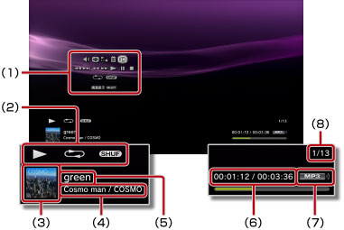

ミュージック > 操作パネルを使う
操作パネルを使う
画面上の操作パネルで、さまざまな操作ができます。操作パネルは、 ボタンで表示／非表示を切りかえられます。
ボタンで表示／非表示を切りかえられます。
音量調整

 （ミュージック）で再生するコンテンツの音声出力レベルを設定します。9段階に調整できます。
（ミュージック）で再生するコンテンツの音声出力レベルを設定します。9段階に調整できます。
ヒント
音量出力レベルを上げすぎると音割れすることがあります。その場合は、音量出力レベルを下げてください。
ビジュアライザー
コンテンツの再生中に表示される背景を切りかえます。
ヒント
 （フォト）や
（フォト）や （インターネットブラウザー）を同時に起動しているときは、ビジュアライザーの切りかえはできません。
（インターネットブラウザー）を同時に起動しているときは、ビジュアライザーの切りかえはできません。
プレイリストに追加
再生中のコンテンツをプレイリストに追加します。
ヒント
プレイリストに追加できるのは、本体ストレージに保存された音楽ファイルに限られます。
削除
再生中のコンテンツを削除します。
ヒント
削除できるのは、本体ストレージに保存された音楽ファイルに限られます。
画面表示
再生中の状態／情報を表示します。再生するコンテンツによって、表示される内容は異なります。

(1) |
操作パネル |
|---|---|
(2) |
状態アイコン |
(3) |
トラックアイコン |
(4) |
アーティスト名／アルバム名 |
(5) |
トラック名 |
(6) |
トラックの経過時間／総時間 |
(7) |
コーデック |
(8) |
トラック番号／総トラック数 |
前
再生中のコンテンツ、または、前のコンテンツの最初に戻ります。
次
次のコンテンツの最初に移動します。
早戻し／早送り
早戻し／早送りをします。 ボタンを押したままにすると、押している間だけ早戻し／早送りをします。
ボタンを押したままにすると、押している間だけ早戻し／早送りをします。
再生
コンテンツを再生します。
一時停止
再生を一時止めます。
停止
再生を止めます。
リピート
繰り返し再生します。ボタンを押すたびに、次の3段階に切りかえられます。
 |
1つのコンテンツを繰り返して再生する |
|---|---|
|
すべてのコンテンツを繰り返して再生する |
| 表示なし | リピートを解除し、最後のコンテンツまで順番に再生する |
シャッフル
ランダムな順番で再生します。